Fun with Filters and Frequencies
En Hsin HOW | ID: 3043225474
Part 1 builds up 2D convolution from scratch, then uses it to find edges, with a plain finite difference operator which was quite noisy, and then a Gaussian-smoothed version.
Part 1.1 — Convolutions from Scratch
I first implement the 2D convolution in two ways:
1. Four nested loops (two over the output pixels (i, j),
two over the kernel (u,v))
click to see 4 loop convolution
def conv4loop(img, kernel, mode="same"):
H, W = img.shape
kh, kw = kernel.shape
k = kernel[::-1, ::-1]
paddedim = np.pad(img, ((kh - 1, kh - 1), (kw - 1, kw - 1)), mode='constant', constant_values=0)
outheight = H + kh - 1
outwidth = W + kw - 1
output = np.zeros((outheight, outwidth))
for i in range(outheight):
for j in range(outwidth):
pixval = 0.0
for u in range(kh):
for v in range(kw):
pixval += paddedim[i + u, j + v] * k[u, v]
output[i, j] = pixval
return output if mode == "full" else _crop_same(output, H, W, kh, kw)
2. a faster version with two loops (over the kernel (u,v)
only, each iteration adding a shifted, scaled copy of the whole image).
Both flip the kernel before sliding it across the image.
click to see 2 loop convolution
def conv2loop(img, kernel, mode="same"):
H, W = img.shape
kh, kw = kernel.shape
k = kernel[::-1, ::-1]
paddedim = np.pad(img, ((kh - 1, kh - 1), (kw - 1, kw - 1)), mode='constant', constant_values=0)
outheight = H + kh - 1
outwidth = W + kw - 1
output = np.zeros((outheight, outwidth))
for u in range(kh):
for v in range(kw):
output += k[u, v] * paddedim[u : u + outheight, v : v + outwidth]
return output if mode == "full" else _crop_same(output, H, W, kh, kw)
Correctness & runtime
Both implementations were then checked against
scipy.signal.convolve2d on a 9×9 box filter and
the Dx/Dy finite difference operators, in both "same" and
"full" mode. I zero-paded both inputs so "full" and "same"
output sizes match what scipy.signal.convolve2d
produces, and indeed, all outputs matched exactly.
click to show output
Image path: ./images/selfie.png Filter Mode | Matches Scipy? ------------------------------ box9 same | True box9 full | True Dx same | True Dx full | True Dy same | True Dy full | True Visual results chart saved to ./images/1.1_results/part1_1_results.png
The four-loop version is roughly 250× slower than the two-loop version here, and the gap grows quickly with image size since it scales with (image pixels) × (kernel pixels) as pure Python loop iterations. The two-loop version instead does (kernel pixels) iterations of vectorized numpy array arithmetic, which is why it's competitive with scipy's compiled implementation. For Dx and Dy (1×2 and 2×1 kernels) the gap is smaller in absolute terms but still ~100×, since there's so little work per kernel entry that loop overhead dominates the four-loop version.
Boundary handling: both implementations
zero-pad the image before convolving, matching scipy's
boundary="fill", fillvalue=0. This means anything
near the border gets averaged against implicit black pixels,
which is why the boxed-filtered image below is visibly darker
within about 4 pixels of every edge.
click to show the two convolution implementations
def conv2d_4loops(img, kernel, mode="same"):
H, W = img.shape
kh, kw = kernel.shape
k = kernel[::-1, ::-1] # flip the kernel
padded = pad_zeros(img, kh - 1, kw - 1)
out_h, out_w = H + kh - 1, W + kw - 1
out = np.zeros((out_h, out_w))
for i in range(out_h):
for j in range(out_w):
acc = 0.0
for u in range(kh):
for v in range(kw):
acc += padded[i + u, j + v] * k[u, v]
out[i, j] = acc
return out if mode == "full" else crop_same(out, H, W, kh, kw)
def conv2d_2loops(img, kernel, mode="same"):
H, W = img.shape
kh, kw = kernel.shape
k = kernel[::-1, ::-1]
padded = pad_zeros(img, kh - 1, kw - 1)
out_h, out_w = H + kh - 1, W + kw - 1
out = np.zeros((out_h, out_w))
for u in range(kh):
for v in range(kw):
out += k[u, v] * padded[u:u + out_h, v:v + out_w]
return out if mode == "full" else crop_same(out, H, W, kh, kw)
Result on my selfie :D
Original image, 9x9 box filter (blur), and the Dx/Dy finite difference results, all computed with the two-loop implementation above.
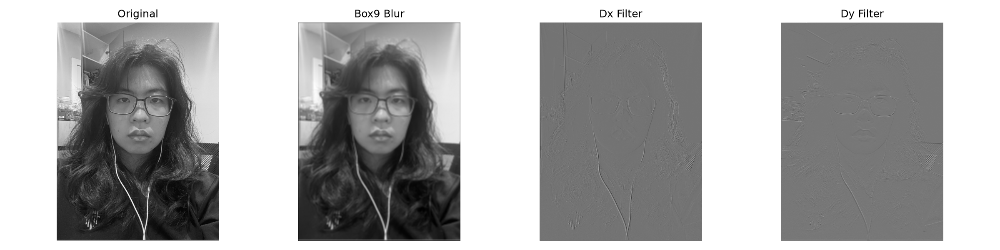
Part 1.2 — Finite Difference Operator

The partial derivatives Dx and Dy are convolved directly with the cameraman image, then combined into a gradient magnitude image via $$\lVert \nabla I \rVert = \sqrt{(\partial I/\partial x)^2 + (\partial I/\partial y)^2}$$ Thresholding this magnitude gives a binary edge map. I tested a few thresholds, and observed that lower values had more noise (especially the grass texture) but too high and the fainter background details (buildings and trees) are not visible.
Choosing a threshold
I settled on t = 0.24 on a [0, 1]-normalized gradient magnitude. As while some noise at the grass is visible, it still maintains a good balance of information (of background).
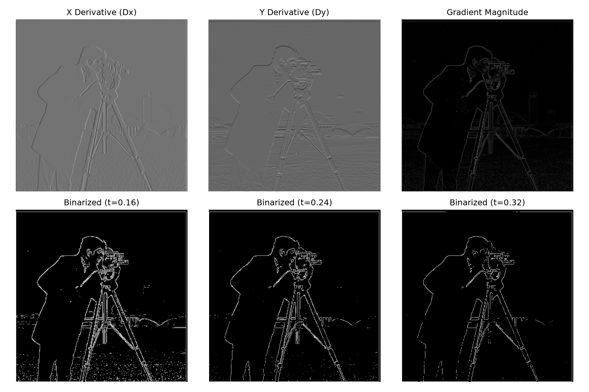
Part 1.3 — Derivative of Gaussian (DoG) Filter
Blurring the image with a Gaussian before taking derivatives removes most of the high-frequency noise that made Part 1.2's edge map noisy, at the cost of slightly thicker, softer edges. Since convolution is associative, blurring then differentiating should give the same result as differentiating a combined Gaussian-derivative (DoG) filter and convolving that with the image just once.
The DoG filters
Built by convolving a 9x9, σ=2 Gaussian (from
cv2.getGaussianKernel, outer-producted with
itself) with Dx and Dy.
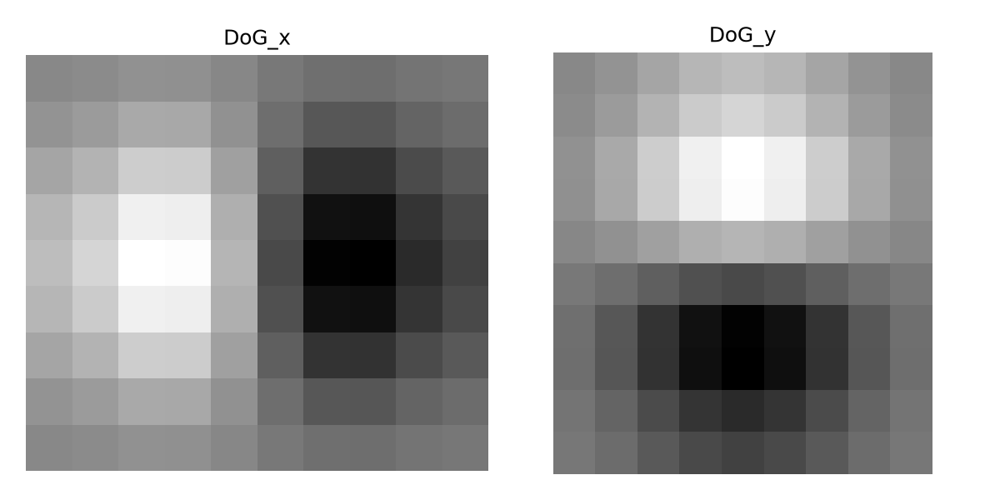
Verifying the two approaches match
"Blur, then Dx/Dy" and "convolve once with the DoG filter" produce visually identical gradient magnitude and edge maps. The mean absolute pixel difference between the two gradient magnitude images was 0.0009 (out of a [0, ~1.4] range); the largest single-pixel discrepancy, 0.35, occurred at column 0 — the image border, where the two approaches zero-pad slightly differently, not a real algorithmic gap.
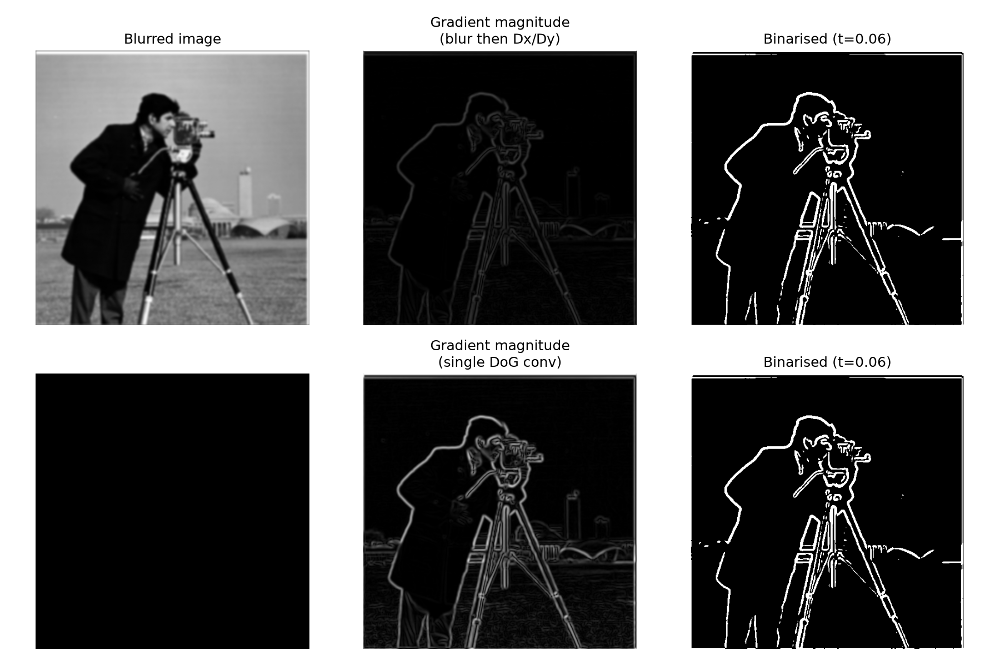
click to show DoG filter construction
def gaussian_kernel_2d(ksize, sigma):
g1d = cv.getGaussianKernel(ksize, sigma)
return g1d @ g1d.T # outer product -> 2D gaussian
gauss = gaussian_kernel_2d(9, sigma=2.0)
DoG_x = convolve2d(gauss, Dx, mode="full")
DoG_y = convolve2d(gauss, Dy, mode="full")
Part 2.1 — Image "Sharpening"
Unsharp masking sharpens an image by boosting its high frequencies. Blurring an image with a Gaussian keeps only its low frequencies, so subtracting the blur from the original isolates the high-frequency detail: $$\text{high freq} = \text{img} - \text{blur}(\text{img})$$ Adding some multiple of that back onto the original makes edges and texture more pronounced: $$\text{sharpened} = \text{img} + \alpha \cdot (\text{img} - \text{blur}(\text{img})) = (1+\alpha)\cdot\text{img} - \alpha \cdot \text{blur}(\text{img})$$ Since "img" is itself just a convolution with a unit impulse (a kernel that's 1 at the center and 0 elsewhere — a "do-nothing" filter), the whole operation collapses into a single combined kernel applied with one convolution: $$\text{sharpened} = \text{conv}\big(\text{img},\ (1+\alpha)\cdot\delta - \alpha \cdot G_\sigma\big)$$ The filter is applied independently to each color channel, since convolution only operates on 2D arrays.
Results
Original, low-frequency (blurred), high-frequency, and sharpened versions of the Taj Mahal image plus two of my own photos, all at α = 1.5. I put the original image at the end next to the sharp image for easier comparison. With the cat, the fur details are much less fuzzier, and for the water, the sun reflections are much sharper.
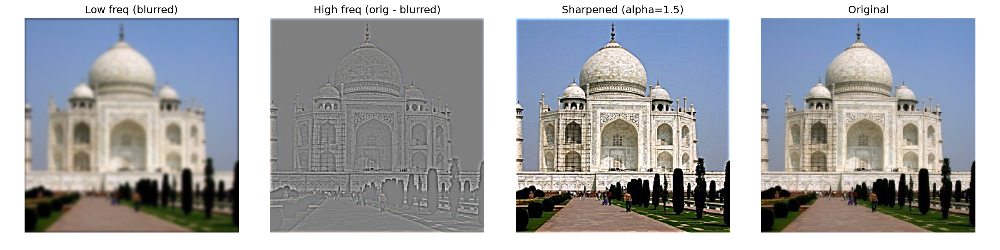
With the cat, the fur details are much less fuzzier, I can see the individual strands.
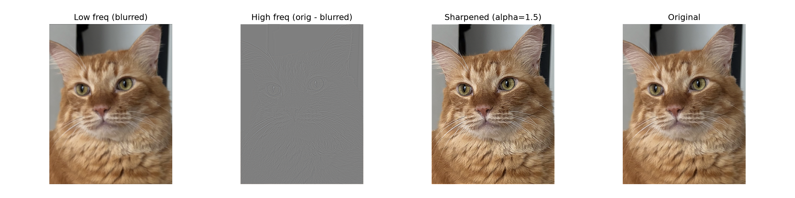
For the water, the sun's reflection on the water ripples are much sharper.
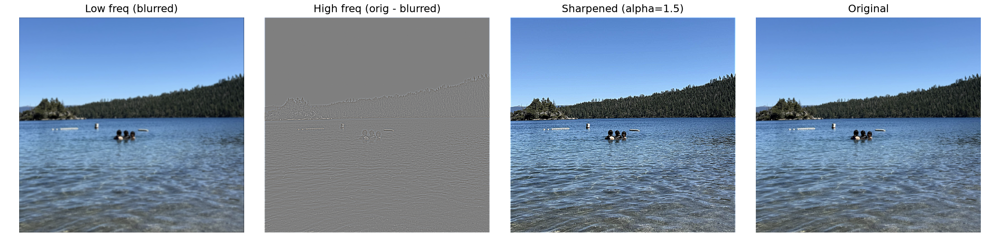
click to show the single-convolution unsharp filter
def build_kernel(ksize, sigma, alpha):
impulse = gridOfZeros(ksize) # 1 at center, 0 elsewhere
gauss = gaussian_kernel_2d(ksize, sigma)
return (1 + alpha) * impulse - alpha * gauss
def sharpen_color(img, ksize=9, sigma=2.0, alpha=1.0):
kernel = build_kernel(ksize, sigma, alpha)
channels = [sharpen_channel(img[:, :, c], kernel) for c in range(3)]
return np.stack(channels, axis=-1)
Evaluation: sharpening a re-blurred sharp image
To sanity check the filter, I took an already-sharp image, blurred it myself (σ = 3.0), then tried to sharpen my way back to the original.
Resharpening lowers the error versus just leaving the image blurred, and it's visibly crisper side by side — but it never fully recovers the original. Fine detail like the texture on the flag and the reflections on the helmet visor stay softer than the true original. This makes sense: unsharp masking can only amplify whatever high-frequency signal survived the blur. Frequencies the Gaussian blur destroyed outright aren't hiding in the image anywhere for the filter to boost — so sharpening isn't the same operation as deblurring, just a cheap approximation of it that works best on mild blur.
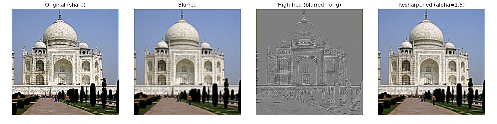
Part 2.2 — Hybrid Images
Following Oliva, Torralba, and Schyns (SIGGRAPH 2006), a hybrid image combines the low frequencies of one image with the high frequencies of another: $$H = I_1 \cdot G_1 + I_2 \cdot (1-G_2)$$ Up close, the high-frequency image dominates, but from a distance, the low-frequency image dominates. Alignment between the two images (matching key features like eyes) matters a lot as it makes the illusion poorer, and similarly shaped objects do better. Hence, I had to find images that have alignable features, as seen below.
Full process: Derek + Nutmeg
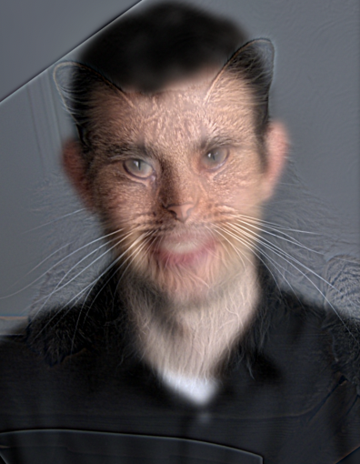
The log-magnitude Fourier transform make the hybrid mechanism visible, as the low-pass filter only keeps a smaller radius near the centre (low frequencies), while the high-pass filter instead removes the centre radius and keeps the edges (high frequencies). The hybrid is their sum.
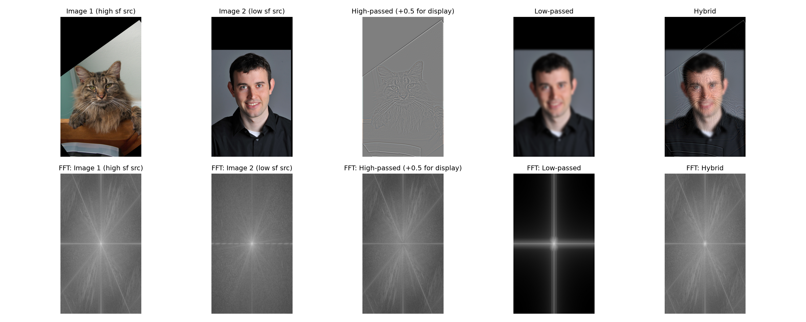
click to show the hybrid image function
def hybrid_image(im1, im2, sigma1, sigma2):
# im1 contributes HIGH frequencies, im2 contributes LOW frequencies
high = high_pass(im1, sigma1)
low = low_pass(im2, sigma2)
return np.clip(high + low, 0.0, 1.0)
Two more hybrids
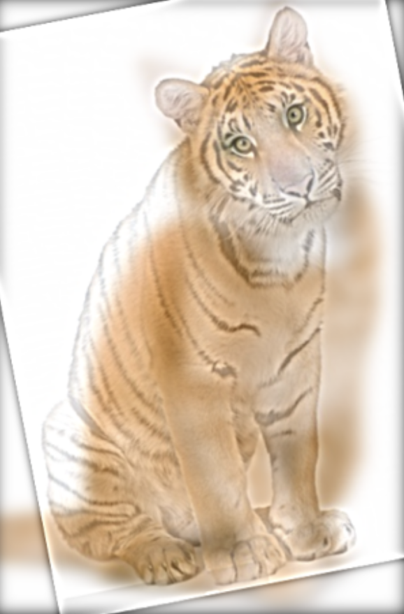
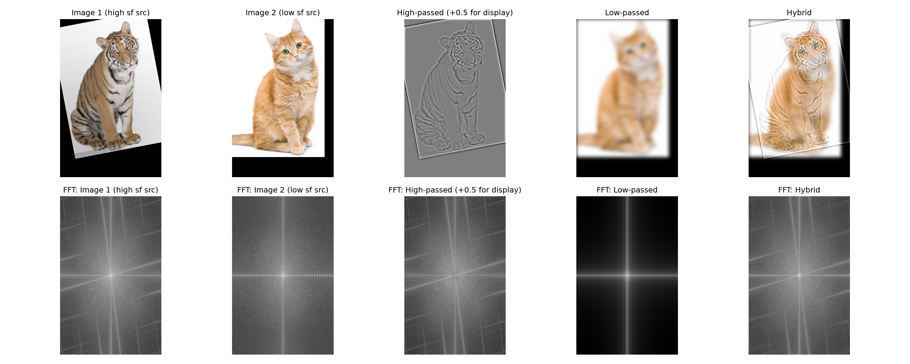
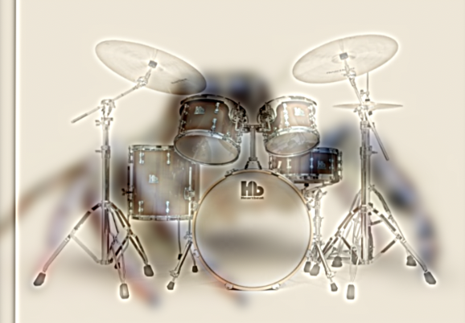
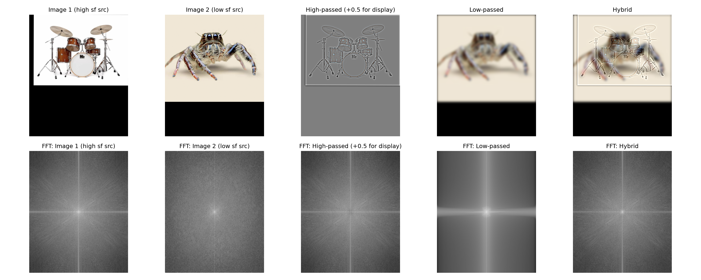
Part 2.3 — Gaussian and Laplacian Stacks
A stack is built like a pyramid but without the downsampling — each level is the previous level blurred again with the same small Gaussian, so every level stays at full resolution. The Laplacian stack takes the difference between consecutive Gaussian levels (the detail lost at each blur step), except the last level, which is kept as the final blurry residual. Summing every level of a Laplacian stack reconstructs the original image exactly — I verified this numerically (mean absolute reconstruction error was 0.000000 for all three test images).
The "oraple" : a hard, unblended splice
Before blending anything, I ran the stacks on a plain hard splice of apple and orange (no blending at all), to see how the seam behaves at every frequency band.
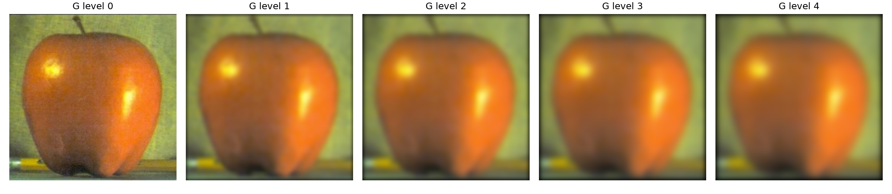
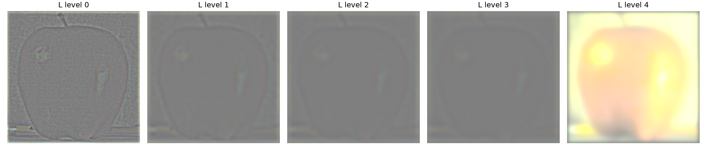
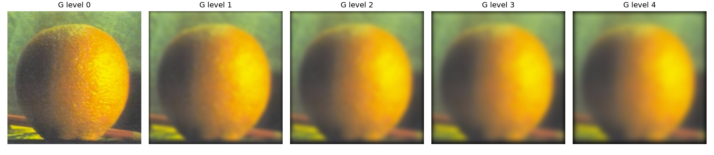
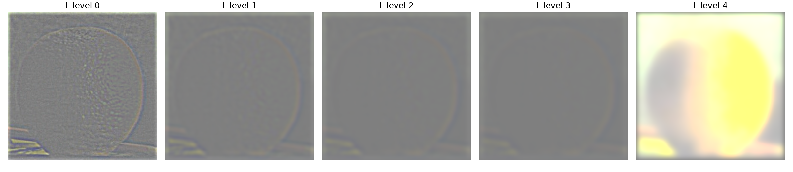
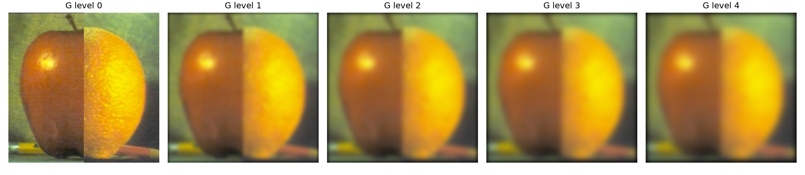
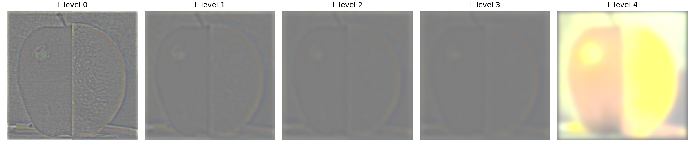
Part 2.4 — Multiresolution Blending
Following Burt & Adelson (1983): build a Laplacian stack for each image, and a separate Gaussian stack for the mask itself. At every level, blend using that level's blurred mask as a weighted average, then sum every blended level back together: $$LS_l(i,j) = GR_l(i,j)\cdot LA_l(i,j) + \big(1-GR_l(i,j)\big)\cdot LB_l(i,j)$$ Coarse levels get a wide, gentle transition; fine levels get a narrow one that is matched to the scale of detail in that band, which is exactly why the seam disappears instead of just blurring.
The oraple, blended
Compared to Part 2.3's hard splice, the seam here is a smooth gradient rather than a visible line.
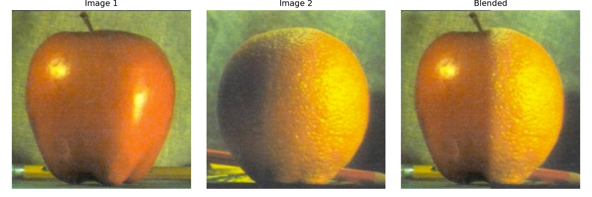
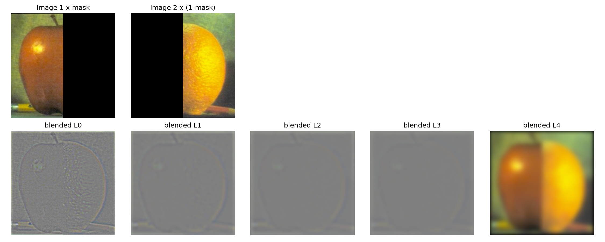
click to show the blending function
def blend(im1, im2, mask, levels, ksize, sigma):
lap1 = laplacian_stack(gaussian_stack(im1, levels, ksize, sigma))
lap2 = laplacian_stack(gaussian_stack(im2, levels, ksize, sigma))
mask_stack = gaussian_stack(mask, levels, ksize, sigma)
blended_levels = [
m[..., None]*l1 + (1-m[..., None])*l2
for l1, l2, m in zip(lap1, lap2, mask_stack)
]
return np.clip(sum(blended_levels), 0.0, 1.0)
Two more blends, one with an irregular mask
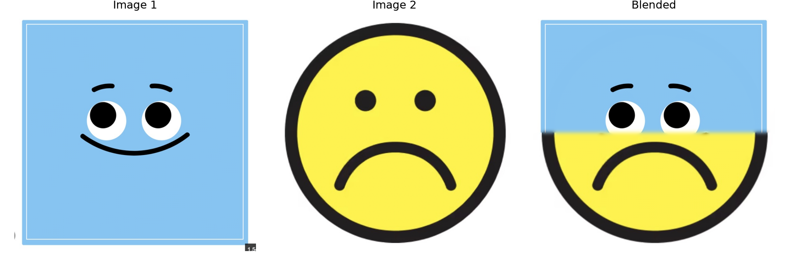
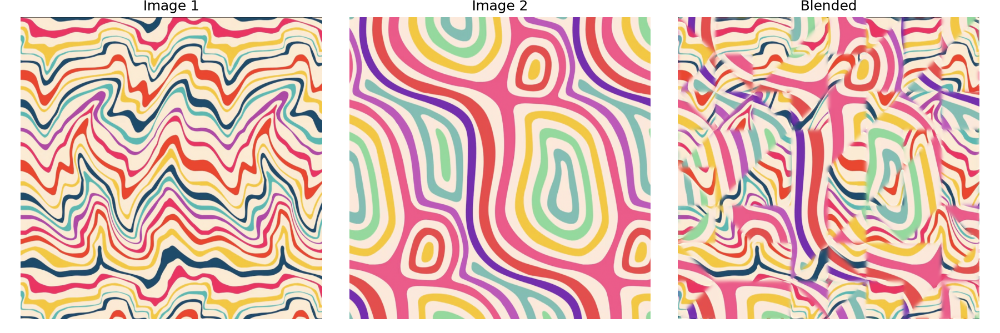